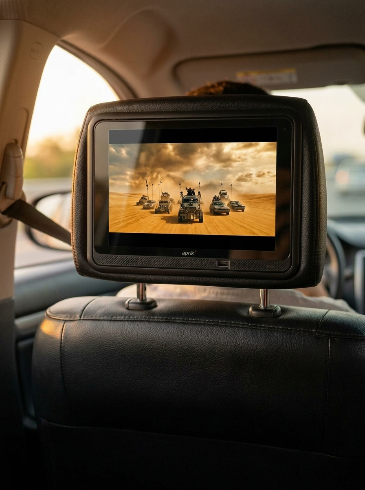
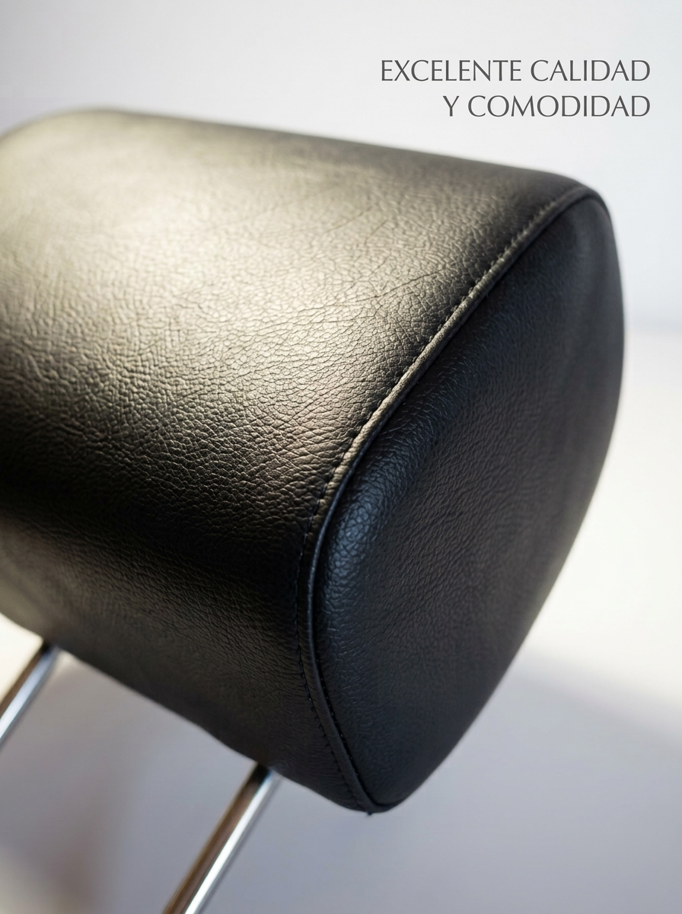
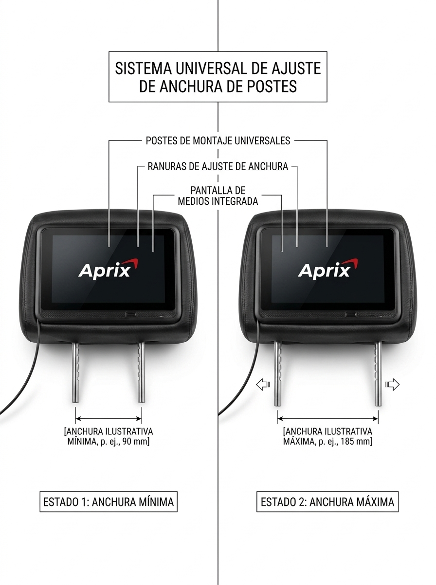
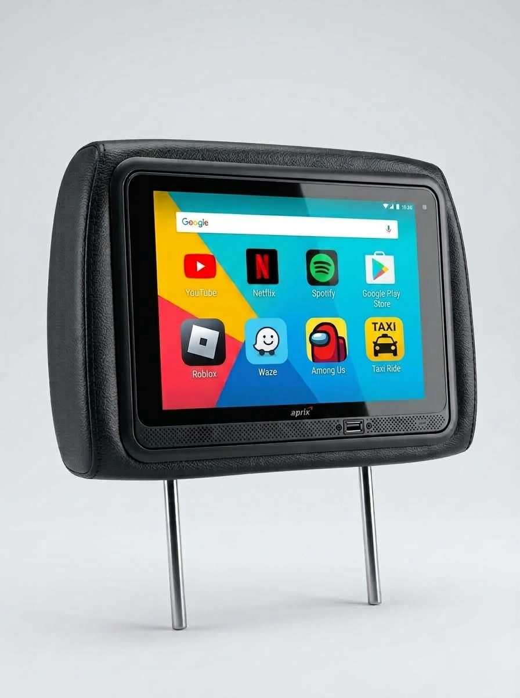
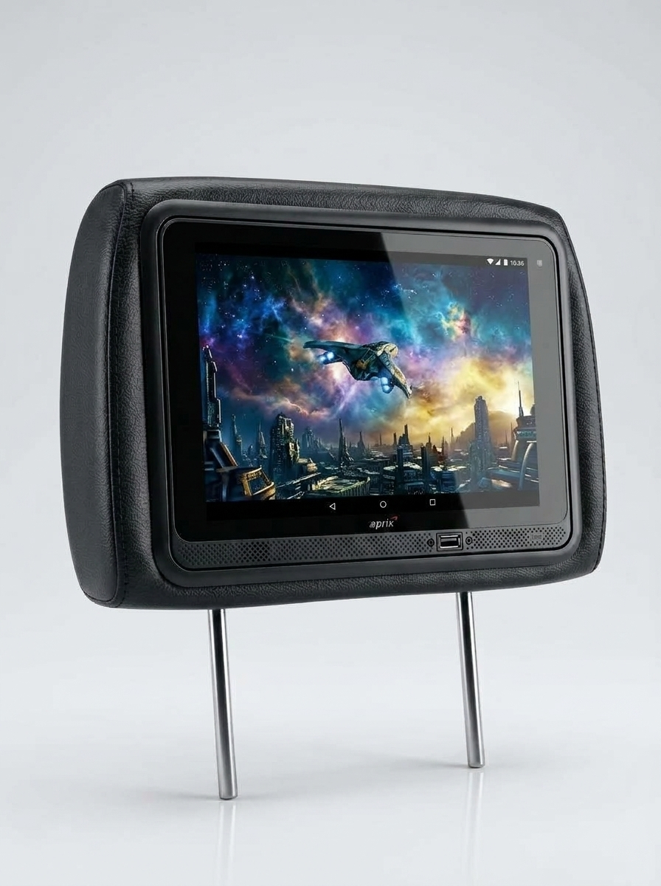

Cabecero con tablet Aprix
Atrás, la película. Adelante, el camino.


Cómodo al frente
Quien va adelante apoya la cabeza en el cojín, en todo el trayecto.

A la medida del asiento
Las patas se corren al ancho del puesto. En el esquema, de unos 90 mm a unos 185 mm.

Apps para el viaje
Es Android, con internet: series, música, mapas y las apps que instales.
Un viaje más tranquilo
Quien va atrás se entretiene. Quien maneja sigue atento al camino.

Para ver en el camino
Película, serie o un video: la pantalla acompaña el rato de atrás.
Preguntas
¿Sirve en mi carro?
Las patas se deslizan al ancho del asiento. El esquema de Aprix muestra de unos 90 mm a unos 185 mm. Si tu asiento está en ese rango, encaja.
¿La tablet es Android?
Sí. Puedes instalar aplicaciones y conectarte a internet: series, música, mapas y el uso de todos los días. Si quieres, se empareja un teclado o un control por Bluetooth. Es para entretener el viaje, no una tablet gamer de alta gama.
¿Cómo se instala?
Lleva cables y una guaya de seguridad, conectados a los accesorios de la batería. Santiago te explica el montaje por WhatsApp.
¿Cuánto cuesta?
El precio no está publicado. Lo consultas por WhatsApp con Santiago Asesor, de Smart EV Power.
¿Lo ves en tu carro?
Santiago Asesor, de Smart EV Power, te responde por WhatsApp: ajuste, instalación y precio.